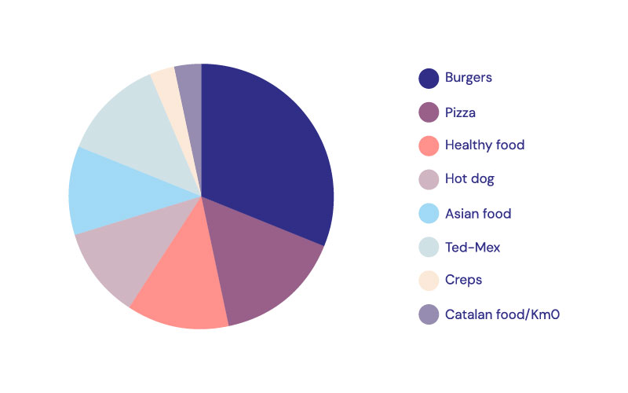

CROQUETEO
a fun and sensual visual identity for a food truck
Overview
Croqueteo is a unique food truck concept that brings a fun and flirtatious twist to the classic croqueta. By blending the words "croqueta" and "coqueteo," the brand aims to showcase croquetas as a lovely culinary experience, inviting customers to indulge in this iconic Spanish delicacy with a captivating approach.
Imagine Croqueteo as a street food experience where each bite offers a flirtatious wink, transforming the traditional croqueta into a bold statement of flavour and fun. The visual identity reflects this vibe, using bright colours and cheeky design elements that capture the essence of playful indulgence.
My Role
In this collaborative project, I co-developed the concept and played a key role in shaping the brand’s visual identity. My responsibilities spanned from initial research and brainstorming to the application of the brand identity across various digital and print supports, ensuring consistency and visual impact throughout all materials.
Design Process

Timeline
Completed in 4 months
Tools used
Adobe Illustator, Adobe Photoshop
Platform
Logo Design, Brand Identity, Online materials, Print materials

The challenge
Launch a street food truck in Barcelona, from the ground up, requiring us to thoroughly analyse the competition, craft an enticing gastronomic concept and design a complete visual identity that would effectively connect with our target audience.
Objectives
Define a unique gastronomic offer and a creative concept for the food truck brand that stands out among the competition.
Create a brand identity that reflects the established concept.
Create a brand experience and apply it across all customer touchpoints.
Understand
We began the project by researching the food truck market in Barcelona, quickly identifying music festivals as a primary venue for food truck consumption. Consequently, we decided to focus our investigation on this sector, as Barcelona hosts over 50 cultural and music festivals each year, some attracting more than 250,000 attendees — this environment presented a strong business opportunity.
Many of these festivals have designated food truck areas, so positioning ourselves within this environment could offer substantial growth potential.
Market and Competitor Analysis
From here we decided to focus our research on the sector of food trucks that are placed at music festivals. To better understand this competitive landscape, we conducted a thorough competitor analysis, focusing on five of the city’s most attended events: Primavera Sound, Sónar, Festival Cruïlla, Palo Alto Market and Share Festival.
We examined the current gastronomic offerings at these events. Here you can see a chart with the most common gastronomic offers of food trucks at music festivals in Barcelona:
Our research revealed a noticeable gap in the food truck market specialising in croquettes. While today’s music festivals boast a vibrant variety of street food options, no establishments focus on this beloved Spanish delicacy.
Survey
We conducted a survey to gauge interest in a croqueta food truck concept, gathering responses from 50 Barcelona residents who had attended at least one music festival in the past two years. Here are some insights we get:
- 82% had never seen a croqueta-specialised food truck.
- 74% believed a croqueta food truck would be novel and appealing.
- 62% stated they would try a croqueta food truck if available at a festival.
- Among participants aged 18-35, 78% expressed particular interest in trying the croqueta food truck.
These insights highlighted a strong potential demand within the 18-35 age group, which is also the most popular audience for music festivals.
Define
Business idea
Croquetas are small, breaded, and fried pastries filled with ingredients like béchamel sauce mixed with meats, cheeses, or vegetables. Their versatility and delicious flavour make them an ideal choice for our food truck, with other several key advantages:
- Ease of cooking and consumption: Croquetas are convenient for street food—they are easy to prepare and can be enjoyed on the go at festivals.
- Variety of flavours: From traditional ham and cheese to innovative vegetarian options, croquetas cater to diverse tastes.
- Popularity of Spanish cuisine: As a beloved Spanish snack, croquetas appeal to both locals and tourists.
- Limited competition: The food truck market currently lacks vendors specialising in croquetas, enabling us to establish a unique niche.

Target audience
Our target audience includes young adults aged 18 to 35 who live in Barcelona and embrace an urban lifestyle. Many are students, professionals, or a mix of both, giving them the disposable income to enjoy leisure activities. They are festival-goers who love attending cultural events, socialising outdoors, and enjoying new experiences with friends.
Aligned with the current trend of treating food as a source of pleasure, our audience also participates in the "food porn culture", often sharing photos of their meals on social media.
Creative concept and Naming
The concept behind this project is coqueteo (flirting in English), the playful act of flirting or giving affectionate signals without full commitment. Playing on the words "coqueteo" and "croqueta," we’ve named our food truck CROQUETEO.
This concept positions croquetas as fun and flirtatious without veering into overtly suggestive territory, creating a unique and playful identity for the brand.
CROQUETEO aims to transform croquetas into a pleasurable experience, making them both visually and gastronomically appealing for the target.